🤖 业务背景
随着自然语言处理技术的发展，纯生成式模型虽然已经能够生成较为流畅的文本，但在实际业务中仍然存在两个典型问题：
- 知识局限性：大模型的知识主要来源于训练数据，通常建立在互联网上的公开语料之上。对于实时性、私有化或离线场景中的知识，模型本身往往无法直接掌握。
- 幻觉问题：大模型的生成本质上仍然是概率计算。当模型缺少某个领域知识，或者面对自己并不擅长的问题时，就可能一本正经地输出错误结论。
再往工程里看，这两个问题通常会进一步拆成三类约束：知识有截止日期、无法理解私域数据、缺少依据时容易产生幻觉。这也是为什么很多企业在做问答机器人、知识助手、客服 Copilot 时，最终都会从“只靠模型记忆”转向“模型 + 外部知识库”的组合方案。
引言
可以先用一句话理解本文：RAG 的本质，是让大模型在回答前先检索资料，再基于资料作答，从“靠记忆回答”切换到“带依据回答”。
📖 什么是 RAG
RAG（Retrieval-Augmented Generation，检索增强生成） 是一种将 信息检索（Retrieval） 与 文本生成（Generation） 结合起来的 AI 方法，主要目标是提升大语言模型（LLM）的知识覆盖范围与回答准确性。
可以把它理解成这样：模型在回答问题之前，先去外部知识库中检索相关内容，再结合检索结果生成最终回答，而不是完全依赖自身参数里的旧知识。
RAG 接受输入并根据来源（例如，维基百科）检索一组相关/支持的文档。这些文档作为上下文与原始输入提示连接，并馈送到文本生成器，生成最终输出。这使得 RAG 能够适应事实随时间变化的情况。这对于绕过 LLMs 的参数化知识静态性，通过基于检索的生成访问最新信息以生成可靠输出非常有用。
RAG 的核心价值主要体现在两个方面：
- 检索：根据用户输入，从外部知识库中检索与问题相关的文本片段，通常依赖文本向量化和向量数据库完成语义匹配。
- 增强生成：将检索到的知识作为上下文输入给大模型，让模型基于更准确、更贴近问题的信息生成答案，从而减少误导性输出。
如果换一个角度理解，RAG 更像是让模型在推理时“开卷考试”：模型本身不需要把所有知识都背下来，而是在回答前先把相关资料找出来，再基于资料作答。

简而言之，RAG 检索到的证据可以作为提高 LLM 响应准确度、可控性和相关性的手段。这就是为什么 RAG 可以帮助减少在高度演变环境中解决问题时出现的幻觉或表现问题

🎯 为什么需要 RAG
要理解 RAG，首先得理解它要解决的痛点。大语言模型的知识来源于预训练阶段吃过的语料，这套"参数化知识"有三个致命的缺陷。
- 知识有截止日期。GPT-4 的训练数据截止到某个时间点，之后发生的事情它一无所知。你问它"2024 年诺贝尔物理学奖给了谁"，它只能坦白说不知道。
- 缺乏私域知识。LLM 训练用的是公开互联网数据，你公司内部的技术文档、客户档案、会议纪要、产品规格书——这些私有数据 LLM 从未见过，所以它也无法回答这类私有问题。
- 幻觉问题。当 LLM 对某个问题没有足够的知识储备时，它有时不会老实说"我不知道"，而是会"一本正经地胡说八道"——用流畅自信的语言生成看起来合理但事实上错误的内容。这是因为 LLM 的本质是一个概率语言模型，它优化的目标是"下一个 token 的概率"，而不是"事实的准确性"。这种幻觉在需要高准确性的场景（法律、医疗、金融）中是不可接受的。
面对这三个缺陷，直觉上你可能会想：那把最新的数据、私域文档全部喂给模型重新训练不就好了？这就是微调的思路。但微调有很高的门槛——需要 GPU 算力、需要整理训练数据、需要处理灾难性遗忘、训练完还要重新部署。而且每次数据更新都要重新微调，成本和周期都不现实。RAG 的诞生，本质上就是在说：能不能不动模型本身，而是在推理阶段给它"开卷考试"的机会？ 不要求模型记住所有知识，而是在需要的时候从外部知识库中检索相关信息，把检索结果作为上下文塞给模型，让它"带着资料回答问题"。

🧠 RAG 与微调的区别
要理解RAG 和微调的对比，我们可以用一个形象的比喻。微调就像是给一个人"补课"——你改变的是他脑子里的知识结构和思维方式。微调后的模型，它的参数被永久性地更新了，它"记住"了新的知识或"学会"了新的行为模式。RAG 则像是给一个人"发参考资料"——你没有改变他的能力，而是在他答题的时候递给他一叠相关材料，让他照着材料来回答。
- RAG 更擅长解决“知识获取”问题，例如最新信息、企业私有文档、产品参数、库存状态、内部制度等。即模型需要用到的事实性信息——最新的数据、私域文档、具体的产品参数等。这些信息的特点是"需要查的，而不是需要学的"。你不需要让模型把你公司所有产品的参数都背下来，你只需要在用户问到某个产品时，帮它从数据库里检索出相关参数就好了。
- 微调 微调改变模型的行为模式和专业能力，更擅长解决“行为模式”问题，例如输出风格、领域术语习惯、复杂格式约束、某类推理偏好等。比如你想让一个通用模型学会用医学术语对话、学会用特定的语气风格回答、学会遵循某种复杂的输出格式、或者让它在某个专业领域（如法律条文解读）的推理能力更强——这些是微调的强项。因为这些本质上是在改变模型的"思维方式"，需要调整模型参数才能实现。
所以在生产环境里，两者通常不是二选一，而是互补关系：微调负责改变模型能力边界，RAG 负责补充实时且可更新的事实知识。
| 方案 | 更擅长解决什么问题 | 典型场景 |
|---|---|---|
| RAG | 外部知识获取、实时信息补充、私域知识接入 | 企业知识库问答、客服机器人、内部文档检索 |
| 微调 | 输出风格、格式约束、领域表达习惯、行为模式塑造 | 法律文书风格、客服回复模板、结构化输出 |

💡 RAG 的核心优势
RAG 相比微调在"知识获取"层面有五大显著优势：
-
知识实时更新，无需重新训练：微调一次可能需要数天甚至数周，而 RAG 的知识更新只需要往向量数据库里写入新数据，几分钟甚至几秒钟就完成了。
-
大幅降低幻觉，生成内容可溯源：RAG 通过在 Prompt 中提供明确的参考信息，把 LLM 的生成从"凭记忆编"变成了"照资料写"。更重要的是，RAG 天然支持引用溯源，用户可以验证信息的准确性。
-
成本低、门槛低、落地快：RAG 只需要一个 Embedding API、一个向量数据库、一个 LLM API，加上几百行代码，就能搭起一个可用的原型。
-
数据安全和权限控制：RAG 天然支持在检索阶段根据用户身份过滤可访问的文档范围，确保模型只能"看到"该用户有权看到的资料。
-
避免灾难性遗忘：因为 RAG 根本不动模型参数，模型的通用能力完好无损，不会在新知识上训练后出现能力退化。

🔄 核心流程
RAG 的完整流程通常可以拆成 5 个核心阶段：
- 数据准备：清洗原始文档，并进行分块处理，例如把 PDF、Word 或网页文本切成可检索的片段。
- 文本向量化：使用嵌入模型（如 BERT、BGE）将文本转换为向量表示。
- 索引存储：将生成的向量写入向量数据库，例如 Milvus、Faiss、Elasticsearch。
- 检索增强：用户提问后，先把问题向量化，再检索相关文档片段。
- 生成答案：把检索结果与用户问题一起送给大模型，生成最终回答。
如果从系统设计视角再抽象一层，RAG 往往会被拆成 离线的索引阶段 和 在线的检索阶段、增强阶段、生成阶段：
- 索引阶段：离线阶段把原始文档解析、切块、向量化后写入向量数据库，提前构建好可检索的知识底座。
- 检索阶段：在线阶段用户提问后，再用同一个嵌入模型把问题向量化，从大规模知识库里先召回一批候选内容
- 增强阶段：增强涉及将检索段落中的上下文有效整合到当前生成任务中的过程，把检索结果变成模型真正能用的上下文
- 生成阶段：让 LLM 基于问题 + 增强后的上下文输出答案，形成模型的最终输出。
提示
如果从工程实现看，RAG 可以简化理解为两句话：
- 离线阶段负责把知识“准备好”
- 在线阶段负责把知识“找出来并组织好”
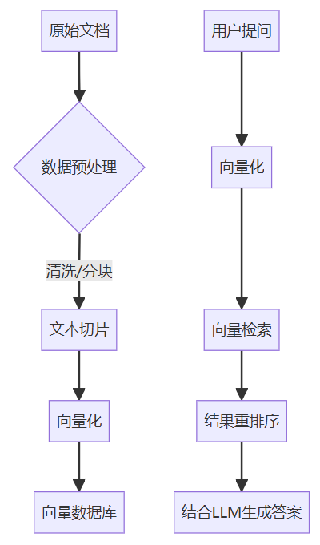
进一步抽象后，RAG 也可以理解成三个阶段：索引阶段、查询阶段、增强生成阶段。
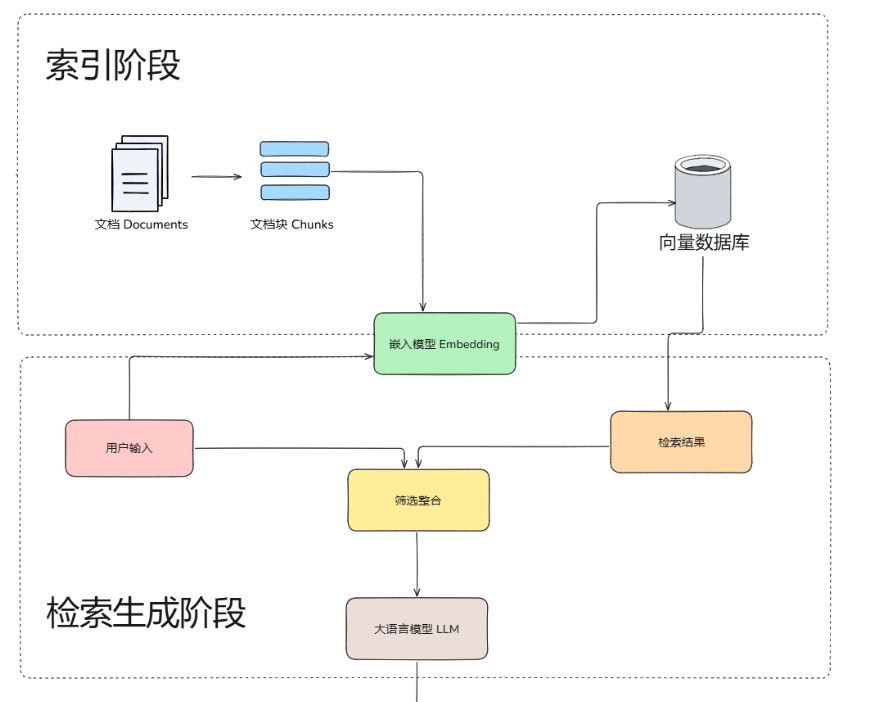
🗂️ 离线阶段
在离线阶段，在RAG系统中只有索引阶段。提前构建好可检索的知识底座。
🗂️ 索引阶段
离线索引阶段是"备考"的过程，目的是把原始文档变成可以被高效检索的形式。 在索引阶段，系统会先对原始文档进行解析，然后拆分为多个较小的文本块。接着，这些文本块会经过嵌入模型处理，转换成向量并存入向量数据库，为后续语义检索提供基础。
📂 文档加载与切分（Chunking）
原始文档可能是 PDF、Word、网页、数据库记录等各种格式，首先要把它们统一解析成纯文本。然后，由于文档通常很长，而后续的 Embedding 模型和 LLM 的上下文窗口都有长度限制，需要把长文档切分成较小的文本块（Chunk）。切分策略是 RAG 工程中第一个需要仔细调优的点——切太大，检索精度下降（一个大 chunk 里可能只有一小段是相关的，其他全是噪声）；切太小，语义完整性被破坏（一句话被从中间截断，失去了上下文）。常见的策略包括按固定长度切分并设置重叠（Overlap）、按自然段落或章节切分、以及基于语义相似度的动态切分。
🧮 文本向量化（Embedding）
一个 Embedding 模型（如 OpenAI 的 text-embedding-3、BGE、E5 等）把每个文本块转换成一个高维向量。这个向量是文本块语义信息的数学表示——语义相近的文本块在向量空间中的距离也相近。这一步的关键是 Embedding 模型的质量，它直接决定了后续检索的准确率。

🗄️ 存入向量数据库（Vector Database）
把所有文本块的向量及其对应的原文存入向量数据库（如 Milvus、Pinecone、Weaviate、Chroma 等）。向量数据库的核心能力是ANN（Approximate Nearest Neighbor，近似最近邻搜索） ——给定一个查询向量，能在毫秒级别从百万甚至亿级的向量中找到最相似的 Top-K 个。
这里有两个工程细节非常关键：
- 切块策略本身就是索引质量的一部分。切得太粗会把多个知识点揉成一个向量，切得太碎又会让语义断裂。
- 索引和查询必须使用同一个 Embedding 模型。否则向量空间不一致，即使文本本身相关，也可能检索不到。

提示
嵌入模型、文本向量化与向量数据库可以这样理解：
- 嵌入模型：把词、短语或句子转换成数值向量的工具，这些向量会尽可能保留文本的语义信息。例如在识物探趣项目中，使用的嵌入模型是 bge-small-zh-v1.5，向量维度为 512。
- 文本向量化：把文本映射到高维空间中。语义相近的内容在空间中距离更近，语义差异较大的内容距离更远。
- 向量数据库：专门用于存储和管理高维向量的数据库，适合对文本、图片、音频等非结构化数据进行相似性搜索。
🌐 在线阶段
在在线阶段，在RAG系统中有检索阶段、增强阶段、生成阶段。其中检索阶段负责从向量数据库中检索相关知识，增强阶段负责把检索到的知识组织整理成模型输入，生成阶段负责把增强后的知识输入让模型输出符合用户需求的回答。
🔍 检索阶段
在线查询阶段是"开卷考试"中翻书查看资料的过程，负责根据用户的问题从外部知识库中找出相关的信息片段。这个阶段通常会结合关键词检索、向量检索或混合检索等方式，从大量文档中召回一批候选内容，其核心目标是尽可能快速且准确地找到与当前问题最相关的知识，为后续回答提供可靠依据。
🔄 查询向量化（Embedding）
用同一个 Embedding 模型把用户的问题转换成向量。注意这里必须用和索引阶段相同的模型，否则向量空间不一致，检索就会失效。
🎯 相似度检索
用问题向量在向量数据库中进行 ANN 搜索，找到 Top-K 个最相似的文本块。这些文本块就是系统认为和用户问题最相关的"参考资料"。实际工程中，这一步往往还会叠加一些增强策略，比如混合检索（同时用向量检索和关键词检索，取并集）、重排序（用一个 Cross-encoder 模型对 Top-K 结果做精排）、查询改写（用 LLM 对用户原始问题做扩展或改写以提高召回率）等。
检索阶段会先把用户问题通过嵌入模型转换为向量，再与向量数据库中的知识向量进行相似度比对。系统会从中找出最匹配的前 K 条结果，作为后续生成阶段的参考上下文。
⚙️ 增强阶段
增强阶段系统将检索段落中的上下文有效整合到当前生成任务中的过程。增强的目的是将召回到的候选内容整理成大模型可以直接利用的上下文，最终构造成适合输入给模型的 prompt，使模型能够在更充分、更准确的上下文中完成回答。
RAG 的增强可以在预训练、微调和推理等不同阶段应用
-
augmentation Stages: RETRO 是一个利用检索增强进行大规模从头预训练的系统示例；它使用了基于外部知识的附加编码器。RAG 还可以与微调结合使用，以帮助开发和提高 RAG 系统的有效性。在推理阶段，应用了许多技术来有效地结合检索内容，以满足特定任务需求，并进一步细化 RAG 过程
-
增强数据源：RAG 模型的效果受增强数据源的选择影响很大。数据可以分为无结构、结构化和 LLM 生成的数据
-
增强过程：对于许多问题（例如多步推理），一次检索是不够的，因此已经提出了几种方法
- 迭代检索使模型能够进行多次检索循环，以增强信息的深度和相关性。利用这种方法的知名方法包括 RETRO 和 GAR-meets-RA
- 递归检索递归地将上一步检索的输出作为下一步检索的输入；这使得对于复杂和多步查询（例如学术研究和法律案例分析）能够更深入地挖掘相关信息。利用这种方法的知名方法包括 IRCoT 和澄清树
- 适应性检索根据特定需求调整检索过程，确定检索的最佳时机和内容。利用这种方法的知名方法包括 FLARE 和 Self-RAG
✨ 生成阶段
生成阶段是 RAG 流程的最后一步，在这个阶段大语言模型将基于用户问题和增强后的上下文内容生成最终答案。在这一阶段，模型不再单纯依赖自身参数中的知识，而是结合外部检索到的信息进行组织、推理和表达，从而输出更准确、更具时效性且更贴合问题需求的回答。这个过程涉及多样化的输入数据，有时需要努力调整语言模型以适应来自查询和文档的输入数据。这可以通过后检索处理和微调来解决：
-
Post-retrieval with Frozen LLM: Post-retrieval 处理不会影响 LLM，而是通过信息压缩和结果重排序等操作来提升检索结果的质量。信息压缩有助于减少噪声、解决 LLM 的上下文长度限制问题，并增强生成效果。重排序旨在重新排列文档，以使最相关的内容排在前面
-
使用 LLM 进行 RAG 微调：为了改进 RAG 系统，生成器可以进一步优化或微调，以确保生成的文本自然且有效地利用了检索到的文档

📊 评价体系
RAG 系统有一个根本特征：它是一个两阶段的 pipeline，每个阶段的失败模式完全不同，因此需要分而治之地评估。
要理解 RAG 评估为什么难，先得理解 RAG 系统的"责任链"结构。用户提了一个问题，先经过检索模块从知识库中找出若干相关文档片段（Chunks），再把这些 Chunks 连同问题一起交给 LLM 生成最终回答。这意味着最终回答的质量取决于两个环节的连乘：如果检索没找对文档，LLM 再强也是"巧妇难为无米之炊"；反过来，即使检索完美地找到了所有相关信息，如果 LLM 没有正确地理解和整合这些信息，甚至编造了检索结果中不存在的内容（即"幻觉"），最终结果同样不合格。更麻烦的是，当最终回答出了问题，你必须能定位到底是哪个环节出了错——是检索阶段的锅还是生成阶段的锅——否则优化就无从下手。这就是为什么 RAG 评估必须分阶段进行。

以下是用于评估 RAG 系统不同方面的指标总结：

🔍 检索阶段评估
检索阶段的核心任务是从知识库中找出与用户问题相关的文档片段。评估这个阶段的好坏，本质上就是在回答三个问题：找到的东西是不是真的相关？该找到的东西有没有漏掉？找到的东西排列顺序合不合理？

📏 基础指标
Precision（精确率）和 Recall（召回率） 是最基础也最重要的两个指标。
- Precision 衡量的是"检索回来的文档中，有多少是真正相关的"——如果你检索了 10 个 Chunk，其中只有 3 个和问题相关，那 Precision 就是 30%，说明有大量噪声文档被带了进来。
- Recall 衡量的是"所有相关的文档中，有多少被成功检索回来了"——如果知识库中有 5 个 Chunk 和问题相关，你只检索到了 2 个，那 Recall 就是 40%，说明关键信息被遗漏了。
在 RAG 场景中，这两个指标存在一个天然的张力。你想提高 Recall，最简单的办法就是多检索一些 Chunk（提高 Top-K），但这会导致 Precision 下降，大量无关的 Chunk 涌入上下文不仅浪费 token，还可能干扰 LLM 的理解。反之，如果 Top-K 设得太小，Precision 上去了，但可能漏掉了关键信息。实际工程中通常要在两者之间找到一个甜蜜点，这就是为什么 F1 Score（Precision 和 Recall 的调和平均）在检索评估中也很常用。
📈 排序指标
但光看 Precision 和 Recall 还不够，因为它们没有考虑排序质量。在 RAG 系统中，检索返回的 Chunk 是有顺序的，排在前面的 Chunk 通常会在 LLM 的上下文中占据更显眼的位置，对生成结果的影响更大。如果最相关的 Chunk 被排在了第 8 位而一个勉强沾边的 Chunk 排在了第 1 位，即使整体的 Precision 和 Recall 看起来还行，实际效果也会大打折扣。
-
MRR（Mean Reciprocal Rank，平均倒数排名） 专门衡量"第一个相关文档排在什么位置"。如果第一个相关文档排在第 1 位，得分是 1；排在第 2 位，得分是 1/2；排在第 5 位，得分是 1/5。MRR 越高，说明系统越能把最相关的结果排到前面，用户（或 LLM）越快就能看到有用的信息。
-
NDCG（Normalized Discounted Cumulative Gain，归一化折损累积增益） 则更进一步，它不仅关心第一个相关文档的位置，而是评估整个排序列表的质量。它的核心思想是：排在前面的文档对最终结果的贡献应该更大，排在后面的文档即使相关，其贡献也要被"折损"。NDCG 考虑了每个文档的相关性程度（不只是"相关/不相关"的二值判断，还可以有"非常相关/部分相关/不太相关"的多级标注），并且用理论最优排序作为归一化基准，所以它在评估分级相关性场景下特别有价值。
-
Context Relevance（上下文相关性），这是 RAGAS 框架提出的评估维度。它不是简单地看每个 Chunk 是否相关，而是评估检索回来的整体上下文中，有多大比例的内容对回答用户问题确实有用。一个常见的实现方式是用 LLM 从检索到的上下文中提取所有能用于回答问题的句子，然后计算这些有用句子占总上下文的比例。这个指标特别适合发现"检索了很多 Chunk 但大部分是废话"的情况。
✨ 生成阶段评估
检索阶段把相关文档找回来了，接下来就看 LLM 拿这些文档能产出什么质量的回答。生成阶段的评估比检索阶段更微妙，因为它要评判的是一段自然语言文本的质量，而自然语言的"好坏"远不像检索命中率那样容易量化。
-
Faithfulness（忠实度） 是 RAG 生成评估中最核心的指标，没有之一。它衡量的是"LLM 生成的回答是否忠实于检索到的文档内容，有没有编造检索结果中不存在的信息"。为什么说它最核心？因为 RAG 系统存在的根本意义就是让 LLM 基于可靠的外部知识来回答，而不是靠自己的参数记忆胡编乱造。如果生成的回答中出现了检索文档完全没有提到的"事实"，那这个 RAG 系统就失去了存在的意义——用户还不如直接问 LLM。Faithfulness 的评估通常是这样做的：先让 LLM 把生成的回答拆分成若干独立的事实性陈述（Claims），然后逐一检验每个陈述是否能被检索到的上下文所支持。Faithfulness 得分 = 被上下文支持的陈述数 / 总陈述数。这个拆分-验证的思路在 RAGAS 和 TruLens 等评估框架中被广泛使用。
-
Answer Relevance（回答相关性） 衡量的是生成的回答是否切题、是否真正回答了用户的问题。一个回答可能完全忠实于检索文档（Faithfulness 满分），但如果它答非所问，同样是一个低质量的回答。比如用户问"Python 的 GIL 是什么"，LLM 却大谈 Python 的安装方法——内容可能没有编造，但完全没有回答用户的问题。RAGAS 框架中评估 Answer Relevance 的一个巧妙方法是：用 LLM 根据生成的回答反向生成几个问题，然后计算这些反向生成的问题与原始问题之间的语义相似度，相似度越高说明回答越切题。
-
Answer Completeness / Correctness（回答完整性/正确性） 关注的是回答是否覆盖了问题的所有要点。一个忠实且切题的回答，如果只回答了问题的一半，也不算好答案。这个指标通常需要一个参考答案（Ground Truth）来对比，评估生成的回答覆盖了参考答案中多少关键信息点。在有标注数据的场景下，这是一个很有说服力的指标。
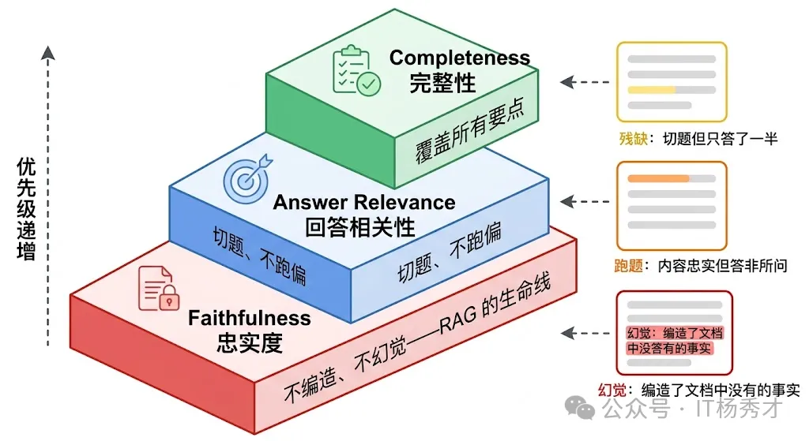
📐 传统 NLP 指标
除了上面这些专门为 RAG 设计的语义级评估指标，还有一些经典的 NLP 文本评估指标也被用在 RAG 评估中，但它们各有局限，需要理解其适用边界。BLEU 和 ROUGE 是最常见的两个。
- BLEU 原本用于机器翻译评估，衡量生成文本与参考文本之间的 n-gram 重叠度
- ROUGE 原本用于摘要评估，侧重衡量参考文本中的关键 n-gram 是否被生成文本覆盖。 它们的优势是计算简单、不需要调用 LLM、成本几乎为零，适合在大规模评估中快速筛选。但它们的根本问题是只看表面文字的重叠，不理解语义。两句意思完全相同但措辞不同的回答，在 BLEU/ROUGE 下可能得分很低；反过来，一句大量复用了原文词汇但意思完全扭曲的回答，可能得分反而高。所以在 RAG 场景中，这些指标只能作为辅助参考，不能作为核心评估手段。
BERTScore 是一个改进方向，它用预训练语言模型的 Embedding 来计算生成文本和参考文本之间的语义相似度，而不是简单的词汇重叠。这在一定程度上解决了"同义不同词"的问题，但仍然依赖参考答案的存在，而且对于 RAG 这种开放式生成任务，参考答案本身就很难穷举。

🤖 LLM-as-Judge（让 LLM 作为裁判）
讲到这里，一个绕不开的实操问题浮出水面：上面说的 Faithfulness、Answer Relevance 这些语义级指标，到底靠什么来计算？ 靠人工标注当然最准，但成本高、速度慢，根本无法满足日常迭代的需求。RAG 评估领域目前最主流的解决方案就是 LLM-as-Judge——用一个 LLM（通常是 GPT-4 级别的强模型）来充当评估者，自动对 RAG 系统的输出进行评分。
RAGAS 框架是目前最成熟的 RAG 自动化评估工具，它的核心就是用 LLM 来评估前面提到的 Faithfulness、Answer Relevance、Context Relevance 等指标。TruLens 则提供了更灵活的反馈函数（Feedback Functions）机制，可以自定义各种评估逻辑。这些框架让 RAG 评估从"每次改动都要找人标注"变成了"改完代码跑一遍评估脚本就能看到效果"，极大地加速了迭代效率。
但 LLM-as-Judge 本身也有局限。首先是评估模型本身可能犯错——它可能误判一个幻觉陈述为"被上下文支持"，或者对一个完全正确的回答打了低分。其次是成本——每次评估都要调用大模型，如果评估集很大，成本也不容小觑。实践中的做法是：日常迭代用 LLM-as-Judge 做快速评估，定期用人工标注做校准和修正，两者互补。

🔄 完整的评估流程
虽然分阶段评估对于定位问题至关重要，但不能忘了最终关心的是端到端的效果。一个检索指标全优但用户满意度不高的 RAG 系统，和一个检索指标一般但最终回答恰好满足用户需求的系统，后者在业务上可能反而更有价值。
所以在实际项目中，一套完善的 RAG 评估体系通常是这样分层的
- 最底层是各阶段的细粒度指标（Precision、Recall、MRR、Faithfulness 等），用于日常开发中的问题诊断和快速迭代
- 中间层是端到端的自动化指标（Answer Correctness、整体 RAGAS 分数），用于版本间的效果对比
- 最上层是人工评估和用户反馈，用于校准自动化指标的准确性和把握真实的用户体验。三层互补，缺一不可。

🏗️ RAG 的常见范式
在过去几年里，RAG 系统从朴素的 RAG 发展到了高级 RAG 和模块化 RAG。这种发展是为了应对性能、成本和效率方面的某些限制
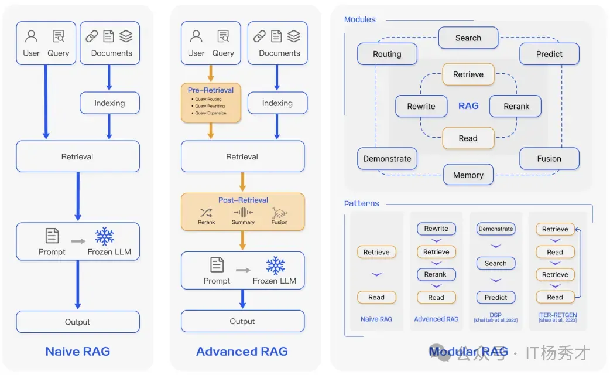
🌱 原生 RAG（Naive RAG）
原生RAG，即Naive RAG，遵循传统的索引、检索和生成过程。Native RAG是整个RAG系统的“入门示例”。它将检索视为简单的一次性查找。其存在是为了让模型基于特定数据运行，而无需微调的开销，但它假设你的检索引擎是完美的。它最适合于低风险环境，其中速度比绝对的事实密度更重要。简而言之，用户输入用于查询相关文档，然后将这些文档与提示结合并传递给模型以生成最终响应。如果应用程序涉及多轮对话交互，可以将对话历史集成到提示中。 工作流程如下
- 分块处理:将文档分割成易于处理的小型文本片段。
- 向量化:每个片段被转换为向量并存储于数据库(如Pinecone 或Weaviate)
- 检索阶段:将用户查询向量化后，通过余弦相似度算法召回"Top-K"最相似的文本片 殳。
- 生成阶段:将这些片段作为"上下文"输入LLM，从而生成基于事实依据的回应。

Naive RAG 有一些局限性，例如较低的精度(检索到的片段对齐不准确)和较低的召回率(未能检索到所有相关片段)。此外，LLM可能会接收到过时的信息，这也是RAG系统最初需要解决的主要问题之一。这会导致幻觉问题和不准确的响应 当应用增强时，还可能出现冗余和重复的问题。使用多个检索段落时，排名和协调风格/语气也是关键。另一个挑战是确保生成任务不要过度依赖增强信息，这可能导致模型只是重复检索的内容
优点:
- 响应速度快
- 极低的计算成本。
- 易于调试和监控。
缺点:
- 极易受到“噪声”影响(检索到无关的文本块)。
- 无法处理复杂的多部分问题。
- 如果检索到的数据有误，系统缺乏自我修正能力。
🚀 高级 RAG
高级 RAG 有助于解决朴素 RAG 存在的问题，如通过优化预检索、检索和后检索过程来提高检索质量。
-
预检索过程涉及优化数据索引，旨在通过五个阶段提升被索引数据的质量：细化数据粒度、优化索引结构、增加元数据、对齐优化以及混合检索
-
检索阶段可以通过优化嵌入模型本身来进一步改进，这直接影响了构成上下文的片段的质量。这可以通过微调嵌入以优化检索相关性或采用能够更好地捕捉上下文理解的动态嵌入（例如，OpenAI 的 embeddings-ada-02 模型）来实现
-
检索后优化侧重于避免上下文窗口限制并处理嘈杂或可能分散注意力的信息。解决这些问题的常见方法是重新排名，这可能包括将相关上下文重新定位到提示的边缘或重新计算查询与相关文本片段之间的语义相似性。提示压缩也可能有助于解决这些问题
🧩 模块化 RAG
顾名思义，模块化RAG增强了功能模块，例如引入了相似检索的搜索模块，并在检索器中进行了微调。朴素RAG和高级RAG都是模块化RAG的特例，由固定模块组成。扩展RAG模块包括搜索、记忆、融合、路由、预测和任务适配器，它们解决了不同的问题。这些模块可以根据特定问题的上下文重新排列。因此，模块化RAG得益于更大的多样性和灵活性，你可以根据任务需求添加或替换模 块或调整模块之间的流程
💬 对话式 RAG
对话式RAG解决了“上下文盲区”问题。在标准设置中，如果用户提出后续问题如“它要多少钱?”，系统无法理解“它”指代什么。该架构通过添加有状态记忆层，为对话的每一轮重新构建上下文。
工作流程如下
- 上下文加载:系统存储最近5-10轮对话记录
- 查询重写:LLM基于历史对话记录生成独立查询(例如:“企业版方案的价格是多少?")。
- 检索:使用扩展后的查询进行向量搜索。
- 生成:答案基于新上下文生成。

优点:
- 提供自然、拟人化的聊天体验。
- 防止用户不得不重复自己的话。 缺点:
- 记忆漂移:10分钟前的不相关上下文可能会污染当前的搜索。
- 由于“查询重写”步骤，导致更高的token成本。
🔧 纠正式 RAG（CRAG）
纠正式RAG(CRAG)是一种为高风险环境设计的架构。它引入了“决策门”机制，在检索到的文档到达生成器之前评估其质量。若内部检索结果不佳，系统将自动切换至实时网络搜索作为备选方案。根据部署CRAG式评估器的团队报告的内部基准测试，相比基础基线模型，该架构已显著降低幻觉现象的发生率。
工作流程如下
- 检索:从内部向量存储中获取文档。
- 评估:轻量级“评分器”模型为每个文档片段分配评分(正确、模糊、不正确)
- 触发门:如果正确:继续执行生成器。否则丢弃数据并触发外部API(如谷歌搜索或Tavily)。
- 合成:使用已验证的内部数据或新鲜的外部数据生成答案。

优点:
- 显著减少幻觉现象。
- 弥合内部数据与实时现实信息之间的差距
缺点:
- 显著增加延迟(增加2-4秒)。
- 管理外部API成本和速率限制。
🎯 自适应 RAG
自适应 RAG 是 “效率冠军”。它认识到并非每个查询都需要动用重火力武器。 它通过路由器分析用户意图的复杂度，并选择最经济、最快捷的解答路径。
工作原理如下
- 复杂度分析： 由小型分类器模型对查询进行路径分配。
- 路径 A（无需检索）： 适用于问候语或 LLM 已掌握的常识性问题。
- 路径 B（标准 RAG）： 适用于简单的事实查询。
- 路径 C（多步智能体）： 适用于需要搜索多个来源的复杂分析性问题。

优点：
- 通过跳过不必要的检索实现大幅成本节约。
- 针对简单查询实现最佳延迟。
缺点：
-
分类错误风险：若系统误判难题为简单问题，将导致搜索失败。
-
需要高度可靠的路由模型。
🪞 自我反思 RAG
自我反思 RAG 是精密架构，其模型经过训练能够批判自身的推理过程。 它不仅进行检索，还会生成“反思标记”，作为对自身输出的实时审查。 工作原理如下
- 检索： 由模型自身触发的标准搜索。
- 带标记生成： 模型在生成文本的同时，会伴随特殊标记，如 [IsRel]（是否相关？）、[IsSup]（此主张是否有支持？）和 [IsUse]（是否有帮助？）。
- 自我修正： 如果模型输出 [NoSup] 标记，它会暂停、重新检索并重写句子。

优势：
-
最高级别的事实"依据性"。
-
推理过程具有内置透明度。
缺点：
-
需要专门的、经过微调的模型（例如 Self-RAG Llama）。
-
计算开销极高。
🔀 融合式 RAG
融合式 RAG 旨在解决 “模糊性问题”。大多数用户并不擅长搜索。 融合式 RAG 会接收单一查询，并从多个角度审视它，以确保高召回率。 工作原理如下
- 查询扩展： 生成用户问题的 3 到 5 个变体。
- 并行检索： 在向量数据库中搜索所有变体。
- 互逆排序融合（RRF）： 使用数学公式对结果进行重新排序。
- 最终排序： 在多次搜索中排名靠前的文档会被提升至顶部。

优点：
-
卓越的召回能力（能发现单一查询会遗漏的文档）。
-
对用户表述不佳的情况具有鲁棒性。
缺点：
-
搜索成本增加（3-5倍）。
-
由于重新排序计算导致延迟更高。
🎭 HyDE
HyDE 是一种反直觉却精妙的模式，它先生成答案，再查找相似文档 。它认识到"问题"和"答案"在语义上存在差异。 通过首先生成一个"虚假"答案，它在两者之间搭建了桥梁。 工作原理如下
-
假设生成：LLM 针对查询撰写一个*虚假的 *（假设性）答案。
-
向量化： 将虚假答案转换为向量表示。
-
检索： 利用该向量查找与虚构答案相似的现实文档。
-
生成： 基于真实文档撰写最终答复。

优势：
-
显著提升对概念性或模糊查询的检索效果。
-
无需复杂的“代理”逻辑。
缺点：
-
偏见风险：若“虚假答案”从根本上就是错误的，搜索将被误导。
-
对于简单的事实查询效率低下（例如，“2+2等于多少？”）。
🕸️ 图 RAG（Graph RAG）
知识图谱增强检索（Graph RAG）解决的是向量检索天然不擅长的“关系推理”问题。向量检索更擅长回答“是什么”，但不擅长回答“A 和 B 之间是什么关系”“从 A 到 C 需要经过哪些步骤”这类需要跨文档关联推理的问题。 GraphRAG 检索的是 实体及其之间的明确关系。它不再追问“哪些文本看起来相似”，而是探究“事物之间如何关联，以及关联的方式是什么？”
Graph RAG 的做法，是在传统向量索引之外，再额外构建一个知识图谱，把文档中的实体与关系抽取出来形成图结构。检索时，先从向量库中找到相关内容片段，再沿着知识图谱中的关系边扩展关联实体和上下文，最后把两路信息合并后送给 LLM。
微软开源的 GraphRAG 项目就是这个方向的代表：它会先用 LLM 从文档中抽取实体关系图，再利用社区检测算法做聚类摘要，查询时结合图结构和摘要完成检索。
工作原理如下
-
图结构构建：知识被建模为图结构，其中节点代表实体（如人物、组织、概念、事件），边则代表关系（如影响、依赖、资助、监管）。
-
查询解析：系统会分析用户查询，以识别关键实体和关系类型，而不仅仅是关键词。
-
图遍历：系统遍历图结构，寻找能够跨越多跳连接实体的有意义路径。
-
可选混合检索：向量搜索常与图检索结合使用，以在非结构化文本中定位实体。
-
生成：LLM 将发现的关系路径转化为结构清晰、可解释的答案。
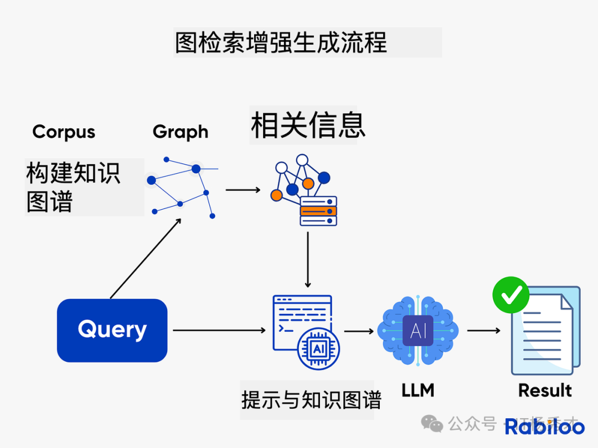
🤖 自适应检索（Agentic RAG）
**自适应检索（Agentic RAG）**是更进一步的演进。传统 RAG 的检索策略通常是固定的，不管什么问题都走同一套流程；但现实里，不同类型的查询其实需要不同策略：
- 简单事实型问题：一次检索往往就够了。
- 复杂分析型问题：可能需要多轮检索，每轮根据上一轮结果继续改写查询。
- 探索型问题：可能需要先找背景，再找细节，再补充证据。
自适应检索（Agentic RAG） 并非盲目地获取文档， 而是引入了一个自主代理，该代理在生成答案前会规划、推理并决定如何以及从何处检索信息。它将信息检索视为研究，而非简单的查找。自适应检索（Agentic RAG） 会把这部分检索过程交给 Agent 自主决策，它可以判断：
- 是否真的需要检索
- 该使用哪种检索策略
- 当前结果是否足够好
- 是否要继续追加一轮检索
工作流程如下
-
分析：智能体首先解析用户查询，判断其属于简单问题、多步骤任务、模糊需求，还是需要实时数据支持。
-
计划：它将查询分解为子任务并决定策略。 例如，应该先进行向量搜索吗？还是网络搜索？调用 API？或者提出后续问题？
-
执行：代理通过调用向量数据库、网络搜索、内部 API 或计算器等工具来执行这些步骤。
-
迭代：基于中间结果，代理可能会优化查询、获取更多数据或验证来源。
-
生成：一旦收集到足够的证据，LLM 就会生成一个基于事实、具有上下文感知能力的最终回答。

⚠️ RAG 的常见瓶颈
很多人一开始会把“检索优化”理解成“换一个向量库”或“把 Top-K 从 3 调到 5”。但真正影响效果的，往往是整条检索链路：查询怎么改写、索引怎么组织、召回怎么融合、候选怎么精排。
🔍 基础向量检索的瓶颈
在进入各种优化手段之前，先要看清楚 基础向量检索本身的瓶颈。很多问题不是“参数没调好”，而是方案本身就有边界：
- 查询和文档之间存在语义鸿沟：用户提问常常是口语化、问题体，但知识库里的文档往往是陈述句、术语化表达。
- 向量检索不擅长精确匹配：涉及时间、数字、型号、版本号等条件时，单纯做语义相似度很容易把“接近但不正确”的内容一起召回。
- 固定切片容易割裂上下文：如果一个完整结论恰好被切开，返回的 chunk 往往只有半段，模型即使看到了也很难稳定作答。
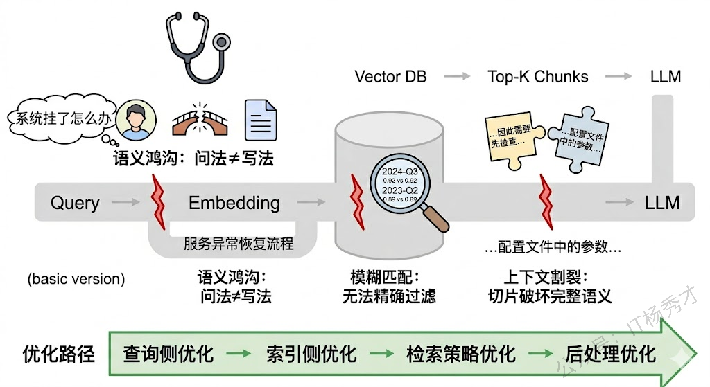
警告
如果底层问题出在“查询表达不清、切块不合理、候选噪声太多”，那么单纯调大 Top-K 往往只会把更多噪声送进模型，而不是稳定提升效果。
📌 RAG 本身的局限性
一个成熟的系统不应该只讲优势而忽略局限。RAG 也有它的短板：
-
检索质量是天花板：RAG 的效果高度依赖检索的准确率——如果检索到的文本块和问题不相关甚至矛盾，LLM 会基于错误的上下文生成错误的答案，这有时会比没有 RAG 更危险（因为模型"有理有据地说错话"，用户更容易相信）。
-
上下文窗口的瓶颈：检索出来的文本块要塞进 Prompt，受限于 LLM 的上下文长度。虽然长上下文模型（128K 甚至更长）在一定程度上缓解了这个问题，但"长上下文 ≠ 好利用"—— LLM 对超长上下文中间部分的注意力会下降（Lost in the Middle 现象）。
-
不擅长改变模型行为：RAG 解决的是"知识获取"问题，而不是"行为模式"问题。如果想让模型学会一种新的推理风格或适应特定的输出格式，这些需要微调来解决。
提示
实际上，RAG 和微调最好的关系是互补而非互斥。很多生产级系统中，两者是一起用的：先微调让模型具备领域专业能力和特定行为模式，再用 RAG 为它提供实时的、可更新的事实性知识。
🚀 RAG 优化策略
💡 查询阶段的优化
很多时候检索质量差，根源并不在检索引擎，而在用户查询本身。用户的提问可能太模糊、太口语化，或者把多个子问题混在一起。如果能在检索之前先把查询“加工”一下，效果往往会明显提升。
查询侧最常见的做法包括：
- Query Rewriting：把口语化、模糊化的问题改写成更适合检索的表达。
- HyDE：先让模型生成一段“假想答案”，再用这段答案的向量去检索，缩小查询和文档之间的表达鸿沟。
- Multi-Query：从多个角度生成查询变体，合并结果以提高召回率。
- Sub-Question Decomposition：把复杂问题拆成多个子问题分别检索，再汇总回答。

🧩 索引阶段的优化
索引侧优化解决的核心问题是：知识该如何被切分、编码、组织，才能在查询发生时被更准确地找出来。
✂️ 选择合适的分块策略
📌 文本切块在 RAG 中的角色
RAG 的基本流程是：用户提问 → 检索相关文档片段 → 将片段拼入 Prompt → LLM 基于这些片段生成回答。而"切块"发生在更早的离线阶段——把原始文档切分成小片段，每个片段生成一个 Embedding 向量存入向量数据库。用户查询时，查询向量和这些片段向量做相似度匹配，找出最相关的 Top-K 片段。
这意味着切块质量直接决定了两件事：检索能不能找到对的片段，以及找到的片段能不能让 LLM 生成好的回答。切得不好，要么检索阶段就漏掉了关键信息，要么检索到了但片段内容残缺不全导致 LLM 无法正确理解。可以说，切块是 RAG 系统中"最不起眼但影响最深远"的环节——很多人花大量精力调 Prompt、换 Embedding 模型、调 Top-K，最后发现问题根源其实出在切块策略上。
分块的本质，是把原始长文本拆成若干个较小但语义相对完整的片段。每个片段通常控制在几百字到上千字之间，比如一个段落、若干段落，或者一个小节。
之所以要分块，主要有几个原因：
- 模型上下文长度有限：长文本无法一次性完整送入模型，拆分后更容易被处理。
- 便于精准定位信息：用户问题通常只关心文档中的某一小部分内容，分块后能更快检索到相关片段。
- 兼顾上下文与检索效率：块太大，检索不精准；块太小，上下文可能断裂。合理分块能在效果和效率之间取得平衡。
所以，分块本质上就是把输入文档切成多个粒度可控的语义单元，方便后续的向量检索与生成模块高效协作。
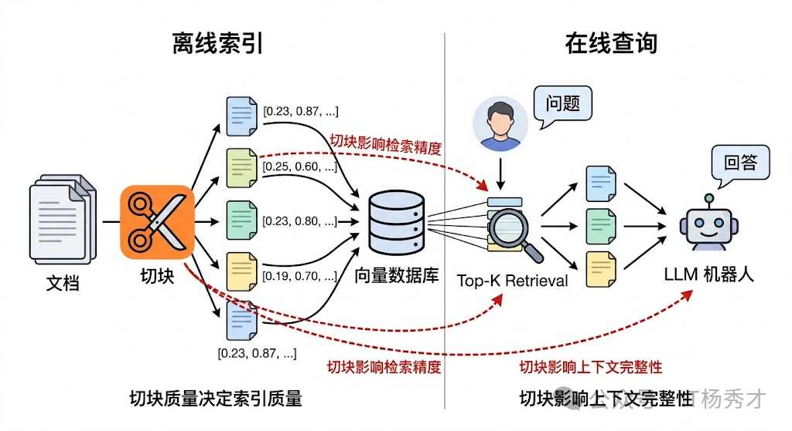
⚖️ Chunk Size 的权衡
从实战调优角度看，分块通常要同时考虑两个参数：chunk size 和 overlap。
- 块太小：每个 chunk 的内容非常聚焦，大概率只包含一个知识点。这带来的好处是 Embedding 向量更精准地代表那个知识点，检索时更容易被"命中"——也就是检索精度（Precision）高。但问题也很明显：一个太小的 chunk 很可能缺少必要的上下文。比如原文是"该方法在实验中将准确率提升了 15%，但仅在数据量超过 10 万条时才有效"，如果从"但"字处切开，前半段 chunk 只说了"提升 15%“而丢失了限制条件，LLM 读到这个片段就可能给出一个过于乐观的回答。此外，小 chunk 意味着数量多，检索到的 Top-K 片段可能来自文档的不同角落，LLM 需要整合多个碎片化的信息，增加了理解难度和幻觉风险。
- 块太大：每个 chunk 包含更丰富的上下文，语义完整性好，LLM 拿到后更容易理解和推理。但大 chunk 的 Embedding 向量不可避免地变成了多个知识点的"混合体”，一个向量要同时代表好几层含义，检索时就容易"模糊匹配"——用户问的是 A，但因为某个 chunk 里 A 和 B 混在一起，B 的部分也被捎带检索出来了，稀释了相关性。更实际的问题是，大 chunk 意味着每个片段占用更多的 Prompt 空间（即 Context Window），能放进去的片段数量就更少，可能导致召回率（Recall）不够。
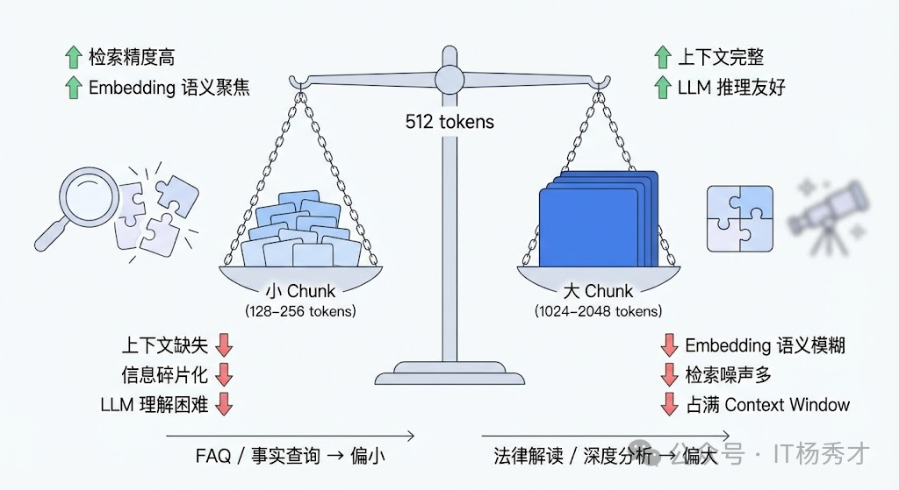
所以 chunk size 的选择不是一个固定的"最优值"，而是根据具体场景在这两极之间找平衡点。工程实践中的经验是：
- FAQ、事实问答 适合偏小的块，例如
256 ~ 512 token。因为答案往往在某一段话里，精准检索更重要 - 技术文档、法律条款、分析型内容 更适合偏大的块，例如
512 ~ 1024 token。因为上下文完整性更关键。
🔗 Overlap 的作用
overlap 的作用，则是缓解块边界处的信息断裂。想象一下，一段连贯的论述横跨了两个 chunk 的边界：前一个 chunk 的结尾讲了原因，后一个 chunk 的开头讲了结论。如果没有重叠，这两个 chunk 各自都是"半截话"——前一个有原因没结论，后一个有结论没原因。Embedding 分别编码后，两个向量都无法完整代表这段论述的含义，检索时就可能漏掉这条关键信息。此时两个向量都不够完整，召回质量会明显下降。
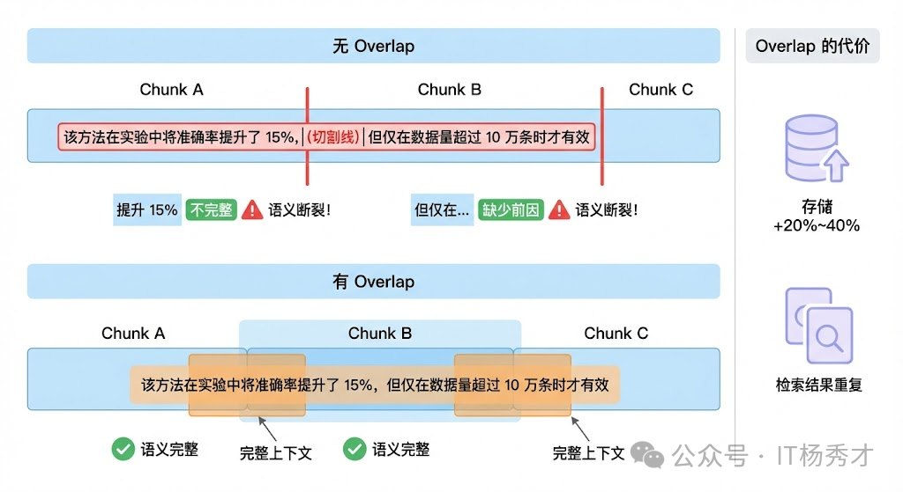
常见的经验值是 overlap 设为 chunk size 的 10% ~ 25%。比如 chunk size 是 512 token，overlap 可以设 50-128 token。过小起不到衔接作用，过大又会带来两个副作用：
- 存储膨胀：同一段内容被重复编码多次。向量数据库的体积和索引成本显著增加
- 检索重复：多个 chunk 包含大量相同内容，检索时可能返回一堆"长得差不多"的片段，浪费了宝贵的 Top-K 配额，等于你明明可以看到 5 条不同信息，结果其中 3 条都在重复同一段话。
📋 常见的切块策略
常用切块策略除了固定大小切块（Fixed-size Chunking），还有更精细的做法：
-
语义切块（Semantic Chunking）：不按固定 token 数切，而是按语义边界切。先把文本按句子分割，然后计算相邻句子之间的 Embedding 相似度，当相似度出现明显下降时（说明话题发生了转换），就在那里切一刀。这样每个 chunk 自然地对应一个完整的语义单元，不需要 overlap 来"缝合"了。
-
基于文档结构的切块：利用文档自身的结构信息。Markdown 文档有标题层级，HTML 有标签结构，PDF 有段落和章节。按这些天然边界来切块，既简单又有效。比如按 Markdown 的二级标题（
##）切，每个 chunk 就是一个完整的章节，语义自然完整。这种方法特别适合结构化程度高的文档，例如技术文档、产品手册、法律合同等。 -
递归切块（Recursive Chunking）：设定一组分隔符优先级（比如先按段落
\n\n切，太大了再按句子\n切，还太大了再按固定长度切），逐级递归直到每个 chunk 都在目标大小范围内。它兼顾了结构化和大小控制，是实践中最常用的默认策略。

🧪 实战调优的步骤
-
先看数据：在动手切之前，先抽样看看原始文档长什么样——平均段落长度、内容结构化程度、信息密度。技术文档和闲聊记录显然需要完全不同的策略。
-
建立评估闭环：准备一组有标准答案的测试问题，跑一轮 RAG 看效果，调整参数后再跑一轮对比。核心指标有两个：检索召回率（相关片段有没有被检索到）和生成准确率（最终回答对不对）。很多时候你会发现检索层面已经召回了正确片段，但因为 chunk 太碎导致 LLM 无法正确理解，这就是切块的锅。
-
考虑多级索引：不只存一种粒度的 chunk，而是同时维护多个层级：比如用小 chunk（256 token）做精准检索，命中后把对应的大 chunk（1024 token）或原始段落送给 LLM。LlamaIndex 中的
SentenceWindowNodeParser和HierarchicalNodeParser就是这个思路的实现。 -
匹配 Embedding 模型能力：不同 Embedding 模型的最佳输入长度不同——有些模型在短文本上表现更好，有些模型专门针对长文本优化（如 jina-embeddings-v2 支持 8192 token）。如果你用的是一个短文本模型却切了很大的 chunk，Embedding 质量会明显下降。
如果文档结构比较稳定，更进一步的做法是结合 语义切块、按标题分块、递归分块，甚至引入 多级索引。例如用小块做精确召回，命中后再回溯父块或原始段落给模型，这样检索和生成两端都能拿到更合适的粒度。
🗃️ 设计合理的索引架构
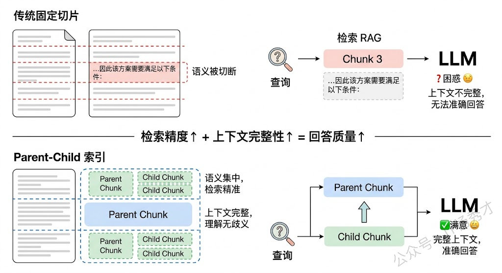
🕸️ Parent-Child 索引
Parent-Child 索引是一种非常实用的索引架构。核心思想是：用小 chunk 做检索，但返回大 chunk 给 LLM。具体来说，先把文档切成较大的 chunk（比如 2000 token），再把每个大 chunk 进一步切成小的子 chunk（比如 200 token）。检索时用小 chunk 的向量做匹配，小 chunk 语义集中，匹配更精准；命中后，返回它所属的父级大 chunk 给 LLM，大 chunk 上下文完整，LLM 能更好地理解和利用。这种设计同时兼顾了检索精度和上下文完整性，在实际项目中效果很好。
📄 文档摘要索引
对于每篇文档，先用 LLM 生成一段摘要，把摘要也做向量化存入索引。检索时，除了匹配原文 chunk，还会匹配摘要。摘要天然是对全文内容的高度凝练，很多时候用户的查询和摘要的匹配度反而比和原文碎片的匹配度更高。命中摘要后，再定位到对应的原文段落，返回详细内容。这种“先粗后细”的两级检索在处理长文档时特别有效。
🏗️ 多层级索引
多层级索引 不只是文档-chunk 两层，而是构建多层级的索引结构——比如**“领域 → 主题 → 文档 → 段落”**。查询时先在高层级（如领域、主题）做粗筛，快速定位相关范围，再在低层级（如段落）做精确匹配。这种分层策略在文档量很大（数十万篇以上）时优势明显，因为它避免了在全量向量中做暴力搜索，大幅减少检索范围的同时提高了匹配准确率。
🧠 选取合适的嵌入模型
如果说分块决定了“知识被切成什么样”，那么 Embedding 模型 决定的就是“这些知识被表示成什么样”。两者共同决定了检索上限。
🧩 Embedding 模型的角色
在 RAG、语义搜索、推荐系统、文档聚类等场景中，Embedding 模型是连接“自然语言”和“数学空间”的桥梁。它把一段文字转化为一个高维向量，使得语义相近的文本在向量空间中彼此靠近，语义不同的文本彼此远离。桥梁质量越高，后续检索、重排、生成的上限就越高。
这个“桥梁”的质量直接决定了下游任务的天花板。以 RAG 为例，如果 Embedding 模型不能准确捕捉查询和文档之间的语义关系，那么即使你的 LLM 再强大、Prompt 写得再好，也无法弥补检索阶段的信息缺失，这就是业界常说的 Garbage In, Garbage Out。所以选好 Embedding 模型是整个系统的地基，地基不稳，上层建筑再精美也没用。
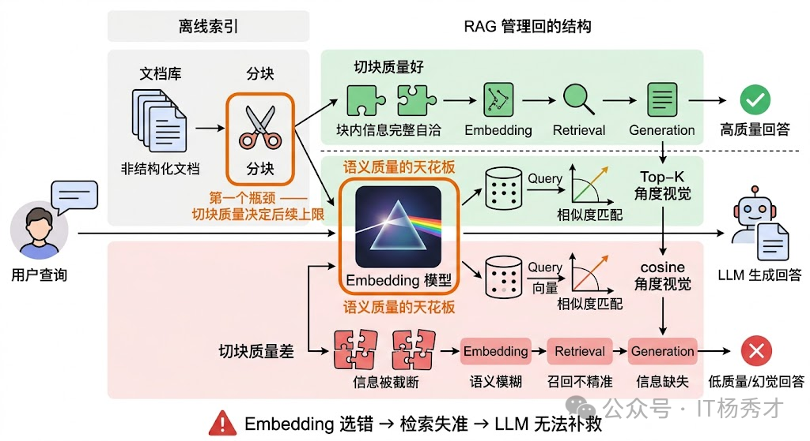
⚖️ 选型时的核心因素
选择嵌入模型时，通常需要重点考虑以下因素：
- 语义准确性：模型能否准确捕捉长句、上下文关系和同义表达，直接影响检索质量。
- 模型效率：推理速度、显存占用和部署成本是否满足业务要求。
- 领域适配性：是否对医疗、金融、法律等垂直领域做过优化，能否理解专业术语。
- 多语言支持：是否覆盖业务需要的语言，以及跨语言语义对齐能力是否足够。
- 数据规模匹配：模型大小与训练数据规模是否匹配当前业务复杂度。
除了上面这些通用因素，真正做选型时还要额外注意 4 个问题：
- 任务类型匹配度：Embedding 模型的训练目标不同，擅长的任务也不同。有些模型是为语义相似度（Semantic Textual Similarity）优化的，擅长判断两段文本说的是不是同一件事；有些是为检索（Retrieval）优化的，擅长从一堆候选文档中找出和查询最相关的那几篇；还有些是为聚类或分类任务优化的。在 RAG 场景中，你需要的核心能力是检索，那就应该优先选在检索任务上表现好的模型，而不是在句子相似度任务上跑分最高的模型。**MTEB 排行榜（Massive Text Embedding Benchmark）**之所以有价值，就是因为它把不同任务类型拆开评估，你可以针对自己的任务类型去看对应的分数。
- 语言和领域匹配度：这一点在国内场景尤为关键。很多在英文上表现优秀的模型，在中文上的效果可能大打折扣。如果你的业务场景是中文为主，就必须选在中文数据上训练过或专门针对中文优化过的模型，比如 BGE（BAAI General Embedding） 系列、M3E、Cohere 的多语言模型等。更进一步，如果是垂直领域（如医疗、法律、金融），通用模型的效果往往不够好，因为这些领域有大量专业术语和特定的语义关系，通用训练数据中覆盖不足。这时候要么选在该领域数据上微调过的模型，要么自己基于开源模型做领域微调。
- 是否支持非对称检索：对称检索指的是查询和文档在形式上是相似的（比如两个句子比较相似度），非对称检索指的是查询和文档形式不同（比如一个短问题去检索一篇长文档）。RAG 场景几乎都是非对称检索——用户的查询通常是一句简短的问题，而候选文档是完整的段落甚至文章。有些模型专门为非对称检索做了优化（比如在训练时使用了 query-document 对，并且对 query 和 document 分别使用不同的前缀指令），在这种场景下效果会明显好于对称模型。E5 系列和 BGE 系列都支持通过 instruction prefix 来区分 query 和 passage，实际测试中这个小技巧对检索效果的提升不可忽视。
- 向量维度与成本的平衡：维度越高，表达能力通常更强，但索引体积、检索延迟和内存占用也会同步增加。选型不能只看效果，还要考虑实际部署时的约束。API 调用模型（如 OpenAI、Cohere）使用方便但有持续成本，且数据要发送到第三方；开源模型（如 BGE、E5、GTE）可以自部署，数据不出域，但需要 GPU 资源和运维能力。在实际项目中，还需要考虑模型的推理速度（高并发下能不能扛住）、最大输入长度（你的文档分块策略和模型的 max_tokens 是否匹配）、以及是否支持批量推理等工程细节。

一些典型取舍如下：
- 轻量模型：如 MiniLM、DistilBERT，速度快，更适合在线问答。
- 重型模型：如 BERT-large 或更大的 Embedding 模型，表达能力强，更适合离线批处理。
- 领域模型或微调方案：适合对专业术语理解要求较高的场景，也可以通过 LoRA 等方式做轻量适配。
📊 评估 Embedding 模型的核心指标
选好了候选模型之后，还需要做评估。
检索类指标是 RAG 场景下最重要的一组。常用的包括：
- Recall@K（召回率）：在 Top-K 个检索结果中，有多少个是真正相关的文档。比如 Recall@10 = 0.8 意味着前 10 条检索结果覆盖了 80% 的相关文档。这个指标直接衡量"该找到的有没有找到"，是检索系统最基础的生命线。
- MRR（Mean Reciprocal Rank，平均倒数排名）：第一个相关文档出现在第几位的倒数的均值。如果第一个相关结果排在第 1 位，MRR 贡献 1；排在第 2 位，贡献 0.5；排在第 3 位，贡献 0.33。MRR 反映的是"用户不想翻页，最相关的结果能不能排在最前面"。
- NDCG@K（Normalized Discounted Cumulative Gain，归一化折损累积增益）：这是最全面的排序指标，它不仅考虑相关文档有没有被检索到，还考虑相关程度更高的文档是否排在更前面。NDCG 的"折损"机制给排在前面的结果更高的权重，越往后权重衰减越快，这和用户的实际行为是吻合的——没人会翻到第 50 页去找答案。
- MAP（Mean Average Precision，平均精度均值）：对每个查询计算 Precision 在不同召回点的平均值，再对所有查询求均值。它综合衡量了检索结果的精确度和排序质量。
语义相似度指标则用于衡量模型在判断文本对相似性上的能力。
- Spearman相关系数：计算模型预测的相似度分数与人工标注的相似度分数之间的排序相关性。Spearman 不关心绝对值，只关心排序是否一致——如果人工标注认为 A 比 B 更相似，模型的分数也应该给 A 更高。这个指标对于 Embedding 模型来说非常合理，因为我们在实际使用中通常是比较相对排序（“哪个更相似”），而不是看绝对的分数值。
- Person相关系数：衡量模型分数与人工标注之间的线性相关程度。相比 Spearman，它对绝对值更敏感，但在实际评估中两者通常配合使用。
- 聚类和分类指标：用于评估向量在下游分类或聚类任务中的区分能力。如果一个 Embedding 模型足够好，那么同类文本的向量应该自然聚拢，不同类的向量应该分开。常用指标包括：V-Measure（衡量聚类结果与真实标签的一致性）、聚类纯度（每个簇中主类别的占比）、以及用向量作为特征训练分类器后的 Accuracy 和 F1。
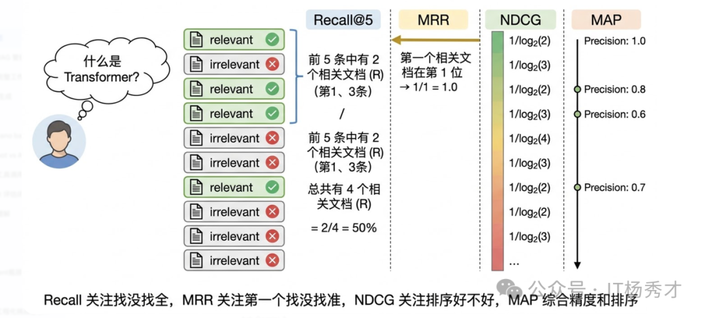
公开基准里最常见的是 MTEB（Massive Text Embedding Benchmark）。它很适合拿来做候选筛选。第一，总分不能直接拿来做选型依据，因为总分是各任务的平均，一个在检索上表现一般但在聚类上特别好的模型，总分可能和一个检索很强但聚类一般的模型差不多。你需要看和你业务场景对应的那个任务类型的子分数。第二，排行榜上的数据集和你的真实数据分布可能差异很大。一个在 MTEB 英文检索任务上排名第一的模型，在你的中文法律文档检索场景下可能排不进前五。所以 MTEB 是选候选模型的起点，不是终点——最终必须在你自己的数据上做评估。
更稳妥的做法通常是：先在 MTEB 或同类榜单里筛出 3 到 5 个候选模型，再在自己的标注数据上跑一轮 Recall、NDCG 和线上 A/B 验证。

🔧 工程实践考量
在实际项目中，除了模型效果本身，还有一些工程因素对选型影响很大。
- 推理性能和吞吐量：推理性能和吞吐量直接影响系统的可用性。如果你的场景是实时检索（用户提交查询后毫秒级返回结果），那 Embedding 模型的推理延迟就是硬约束。一般来说，参数量越小、向量维度越低的模型推理越快。在高并发场景下，还需要考虑模型是否支持高效的批量推理和 GPU 加速。ONNX Runtime 和 TensorRT 等推理优化工具可以显著提升吞吐。
- 最大输入长度：最大输入长度是另一个经常被忽视的因素。不同模型支持的最大 token 数差异很大——有些模型只支持 512 tokens，有些支持 8192 甚至更长。这直接影响你的文档分块策略：如果模型只支持 512 tokens 但你的文档块平均 1000 tokens，超出部分就会被截断，等于你精心设计的分块策略白费了一半。反过来，如果模型支持很长的输入，你就有机会使用更大的块来保留更完整的上下文语义，这对于检索质量的提升有时是决定性的。
- Matryoshka：Matryoshka是近期一个很值得关注的技术。传统模型生成固定维度的向量，而 Matryoshka Embedding 允许你在推理后截取前 N 维作为压缩向量使用，不同维度下的效果会渐进衰减但不会断崖式下降。OpenAI 的 text-embedding-3 系列和 Nomic 的 nomic-embed-text 就支持这个特性。它的工程价值在于你可以在同一个模型上灵活调节"效果-成本"的平衡——存储紧张时用低维向量，追求效果时用全维向量。
🔍 综合考量
选择 Embedding 模型需要从多个维度综合考量，不能简单看排行榜选分数最高的。首先要匹配任务类型，RAG 场景下应该重点看模型在检索任务上的表现而不是看综合总分，MTEB 排行榜把任务拆得很细，可以针对性地看。其次是语言和领域匹配，中文场景下 BGE、M3E 这类专门做过中文优化的模型通常比纯英文模型效果好很多，垂直领域如果通用模型效果不够还需要做领域微调。第三要关注对称和非对称检索的区别，RAG 是典型的短查询检索长文档的非对称场景，BGE 和 E5 都支持通过 query/passage 前缀来优化这种场景，这个细节在实际中对效果影响很大。工程层面还要考虑向量维度带来的存储和计算成本、模型支持的最大输入长度是否和分块策略匹配、以及推理吞吐能否满足在线服务的延迟要求。
评估指标方面，检索场景最核心的是 Recall@K、MRR、NDCG@K 和 MAP 这几个。Recall 衡量能不能找全，MRR 衡量第一个相关结果排得准不准，NDCG 综合衡量排序质量，MAP 则综合了精确度和排序。语义相似度任务主要看 Spearman 相关系数。但最关键的一点是，公开基准上的分数只能用来初筛候选，最终一定要在自己的真实数据上做评估，因为 MTEB 的数据分布和你的业务数据可能差异很大。在实际项目中，我的做法是先从 MTEB 筛出 3-5 个候选，然后在自有标注数据上跑 Recall 和 NDCG 做离线对比，最优的模型再通过 A/B 测试在线验证，确认效果后才正式采用。
🔬 检索阶段的优化
检索侧优化解决的核心问题是：如何在海量候选内容里，把最值得送进模型的那一小部分上下文尽可能稳定地找出来。
🔀 混合检索与多路召回
单纯的向量检索再怎么优化，也有它的能力天花板，因为 Embedding 模型本身就有局限。真正在生产环境中效果好的方案，几乎都不是只用向量检索，而是混合多种检索方式。
Hybrid Search（混合检索） 是目前工业界最常见的方案。它会同时使用稀疏检索（如 BM25）和稠密检索（向量检索），再通过融合策略合并结果。之所以有效，是因为两种检索方式的能力边界刚好互补：
- 向量检索 擅长理解语义，例如“汽车”和“轿车”字面不同，但向量距离可能很近。
- BM25 等稀疏检索擅长精确关键词匹配，例如查询
GPT-4o时，不容易把GPT-3.5的结果混进来。
Rank Fusion 指的是对初步召回的候选文档再次做融合排序，以提高召回率和准确性。
其中最常见的方法是 Reciprocal Rank Fusion（RRF）。它的逻辑很直接：分别根据候选文档在多路结果中的排名计算得分，再把这些得分加总为最终分数。RRF 的优势在于：
- 不依赖分数归一化：BM25 与余弦相似度分数不在同一量纲，直接混合容易失真。
- 工程实现简单：按排名融合更稳健，落地成本低。
- 兼容多路召回：不仅能融合两路，也能扩展到多路检索结果。
Elasticsearch 8.x 以及很多向量数据库（如 Weaviate、Qdrant）都已经对混合检索提供了原生支持。

🔽 元数据过滤
元数据过滤是另一个经常被忽视、但非常实用的检索增强手段。它的做法是在向量检索之前或之后，利用文档的元数据（如时间、来源、类别、作者、权限范围）做预过滤。
例如用户问“最新的产品定价策略”，可以先用元数据过滤出最近 3 个月的文档，再在这个子集内做向量检索。这样有两个直接好处：
- 准确率更高：先把明显不可能相关的数据排除掉。
- 检索成本更低：缩小候选集合后，召回与精排压力都会下降。
元数据过滤对“精确条件 + 语义理解”的混合型查询尤其有效，而现实业务中的问题，大多都属于这一类。
🔧 后处理阶段的优化
检索完成后，在结果送进 LLM 之前，还有一个重要的优化环节，就是后处理。它的核心价值在于：用更精细的模型对检索结果做“二次筛选”，把真正相关的内容留下，把噪声过滤掉。
🔄 Rerank 重排序
前面检索阶段的 Rank Fusion，其目标通常是在海量文档中快速筛出一批大致相关的候选结果，所以它更偏向效率，准确性不是最高。Rerank 则会在这批候选结果上继续精排，挑出最匹配的问题上下文，再交给大模型使用。
典型流程是：先用向量检索做粗召回（比如返回 top-20），再用专门的 Cross-Encoder 重排序模型对这 20 个结果逐一精排，重新排序后取 top-5 送给 LLM。
它的典型流程如下：
- 生成候选文档：先通过向量检索或传统检索得到一批候选结果。
- 执行重排序：使用 Rerank 模型对候选结果重新计算匹配得分。
- 选取 Top-K：保留最相关的若干条结果，作为最终生成阶段的输入。
它之所以有效，是因为向量检索和重排序本质上是两种不同架构：
- 向量检索使用的是 Bi-Encoder：查询和文档分别编码成向量，再做相似度计算，优点是快，适合大规模召回。但代价是查询和文档之间没有交互，模型看不到它们的细粒度关联。
- Reranker 使用的是 Cross-Encoder：把查询和文档拼接后一起送进模型，模型能逐
token地分析查询和文档之间的交叉关系，自然能更准确地判断相关性。优点是准，适合小规模精排。代价是慢（每对query-doc都要过一遍模型），所以只能用在候选量较小的重排阶段。
这就是 RAG 里常见的“粗召回 + 精重排”两阶段架构。第一阶段用速度快但精度一般的 Bi-Encoder 做大范围召回，第二阶段用精度高但速度慢的 Cross-Encoder 做小范围精排。这个架构在搜索引擎和推荐系统中已经用了很多年，移植到 RAG 中同样非常有效。常用的 Reranker 模型包括 Cohere Rerank、bge-reranker，以及基于 cross-encoder 架构的各类模型。

💾 Contextual Compression 上下文压缩
**Contextual Compression（上下文压缩）**是另一种常见的后处理策略。检索回来的 chunk 里，往往会有大量和查询无关的“水分”。例如一个 500 token 的 chunk 中，真正与问题强相关的内容可能只有两三句话。
上下文压缩的思路，就是用 LLM 或专门的提取模型，把每个 chunk 中与查询相关的核心信息提取出来，压缩成更精炼的片段。这样做的价值很明确：
- 减少输入
token数量，从而降低生成成本。 - 减少无关信息干扰，提高回答稳定性。
- 让上下文利用率更高，把宝贵的上下文窗口留给真正重要的信息。
LangChain 的 ContextualCompressionRetriever 就提供了开箱即用的实现。
当你已经把分块、索引、召回、重排这些基础能力打磨到位后，再继续往上走，才值得考虑更复杂的增强路线。
📝 提示词优化
高质量的**提示词（Prompt）**设计，可以显著提升 RAG 的最终效果。常见做法包括：
- 明确角色与任务：清晰说明模型身份、能力边界与回答目标，例如要求模型只能基于提供资料作答。
- 结构化组织输入：将提示拆成“背景 + 问题 + 输出格式”之类的清晰结构。
- 加入上下文约束：明确禁止模型脱离检索内容自由发挥，减少幻觉。
- 设置兜底机制：如果没有检索到相关资料，就要求模型明确返回“未找到相关内容”。
✅ 小结
RAG 的核心价值，不是简单地“给大模型加个数据库”，而是通过 检索能力 + 上下文增强 + 生成能力 的协同，解决大模型在知识实时性、准确性和可控性上的不足。
如果从工程视角来看，RAG 的效果往往取决于三个关键点：
- 索引是否合理：文档切分与向量化质量决定了知识底座的可用性。
- 检索是否精准：召回策略与重排序决定了模型能看到什么信息。
- 生成是否可控：提示词设计与上下文约束决定了最终答案的稳定性。
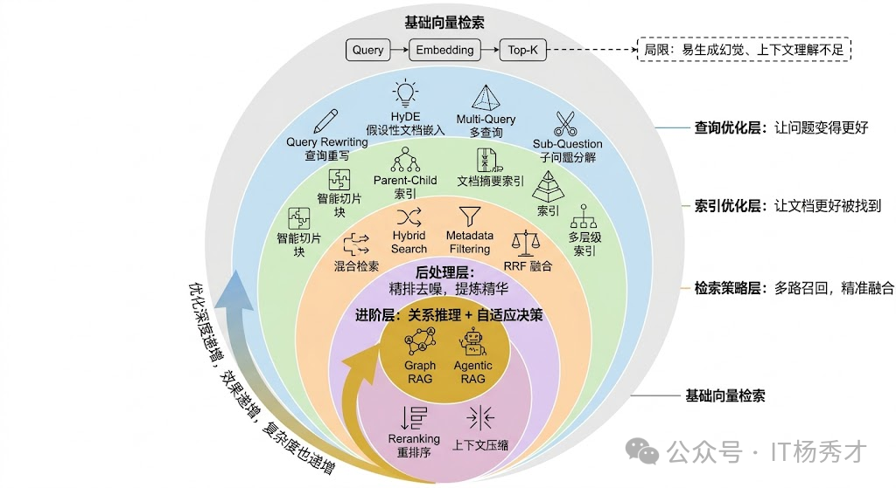
如果继续往进阶方向走，还会逐步接触到 Graph RAG 和 Agentic RAG。前者强调把实体关系也纳入检索，补足跨文档关系推理；后者强调让 Agent 根据问题复杂度动态决定是否检索、检索几轮、用哪种召回策略。它们本质上都在做同一件事：让 RAG 从“能检索”进化到“会检索、会取舍、会组织上下文”。
注解
如果要把这篇文章压缩成一条工程建议，可以记住这个顺序：先把索引质量打牢，再优化召回策略，最后做重排和上下文组织。